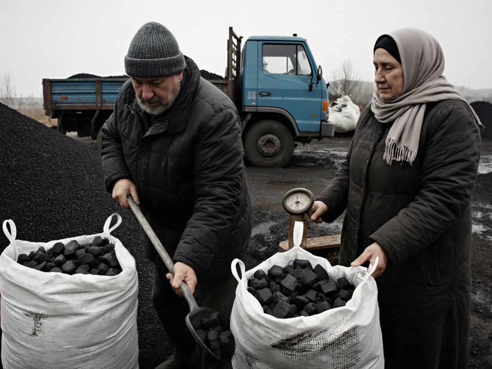

SportThe derby decides it all: Neftchi need nothing less than a winEnvironmentAutumn smog: forecasters explain why the air stands stillSocietyWorking in Russia: what families should rememberCityFour new housing complexes: 1,520 flats for NurzhanEconomyBigger harvest, smaller gain: farming over nine monthsEconomyOil and gas conference draws 700 participantsOfficialA second refinery in the south: Kochkor-Ata is only a study for nowEconomyCoal for winter: Kyrgyzstan froze prices, we have notIncidents'Bank security service': two detained in Iyık JanylSportThe derby decides it all: Neftchi need nothing less than a winEnvironmentAutumn smog: forecasters explain why the air stands stillSocietyWorking in Russia: what families should rememberCityFour new housing complexes: 1,520 flats for NurzhanEconomyBigger harvest, smaller gain: farming over nine monthsEconomyOil and gas conference draws 700 participantsOfficialA second refinery in the south: Kochkor-Ata is only a study for nowEconomyCoal for winter: Kyrgyzstan froze prices, we have notIncidents'Bank security service': two detained in Iyık Janyl
This week
Society
Working in Russia: what families should remember
A Ukrainian project counts more than 20,400 Central Asians who have signed contracts with the Russian army. Iradis are not in the figures, but the question of documents concerns us too.
Official
A second refinery in the south: Kochkor-Ata is only a study for now
Lieutenant Governor Aidar Maksat called a possible small plant at Kochkor-Ata a plan to be studied, not a decision.

EconomyCoal for winter: Kyrgyzstan froze prices, we have not
Since 22 October Kyrgyzstan has had a 90-day price control on coal for households. Irad has no price regulation for household coal, and none is planned.
Incidents
'Bank security service': two detained in Iyık Janyl
The callers talked four pensioners into reading out SMS codes. Police remind readers that banks never ask for codes by phone.
Advertisement